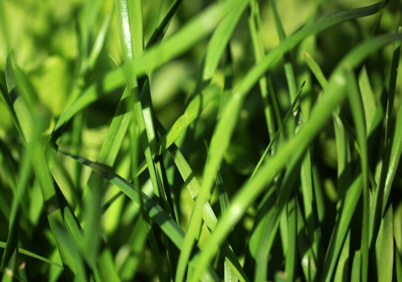

韭菜百合科葱属植物
韭菜，(学名：Allium tuberosum Rottler ex Sprengle.)别名：丰本、草钟乳、起阳草、懒人菜、长生韭、壮阳草、扁菜等;属百合科多年生草本植物，具特殊强烈气味，根茎横卧，鳞茎狭圆锥形，簇生;鳞式外皮黄褐色，网状纤维质;叶基生，条形，扁平;伞形花序，顶生。

韭菜属于百合科多年生宿根蔬菜，适应性强，抗寒耐热，中国各地到处都有栽培。南方不少地区可常年生产，北方冬季地上部分虽然 枯死，地下部进入休眠，春天表土解冻后萌发生长。
1、温度：韭菜性喜冷凉，耐寒也耐热，种子发芽适温为12℃以上，生长温度15℃到25℃，地下部能耐较低温度。
2、光照：中等光照强度，耐阴性强。但光照过弱，光合产物积累少，分蘖少而细弱，产量低，易早衰;光照过强，温度过高，纤维多，品质差。
3、水分：适宜的空气相对湿度60-70%，土壤湿度为田间最大持水量的80-90%
4土壤营养：对土壤质地适应性强，适宜pH为5.5-6.5。需肥量大，耐肥能力强。
本站文章均来自互联网，仅供学习参考，如有侵犯您的版权，请邮箱联系我们删除！
 上一篇
上一篇